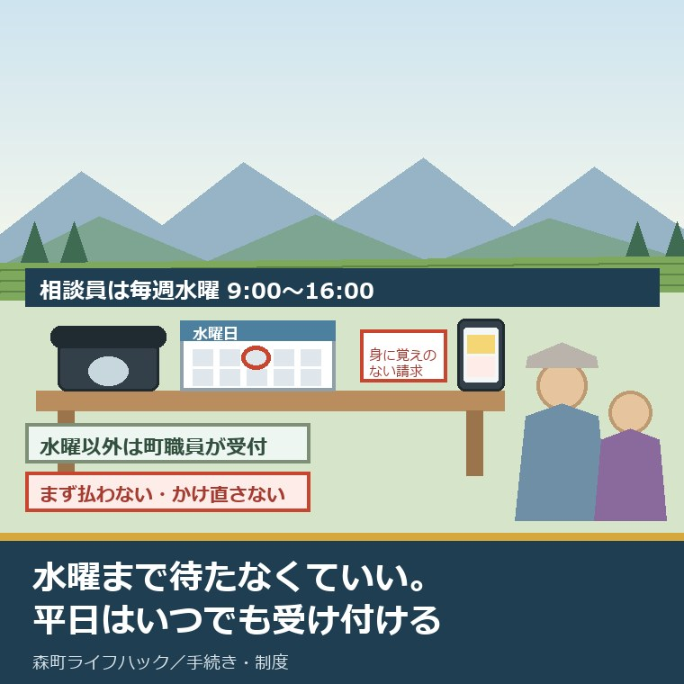
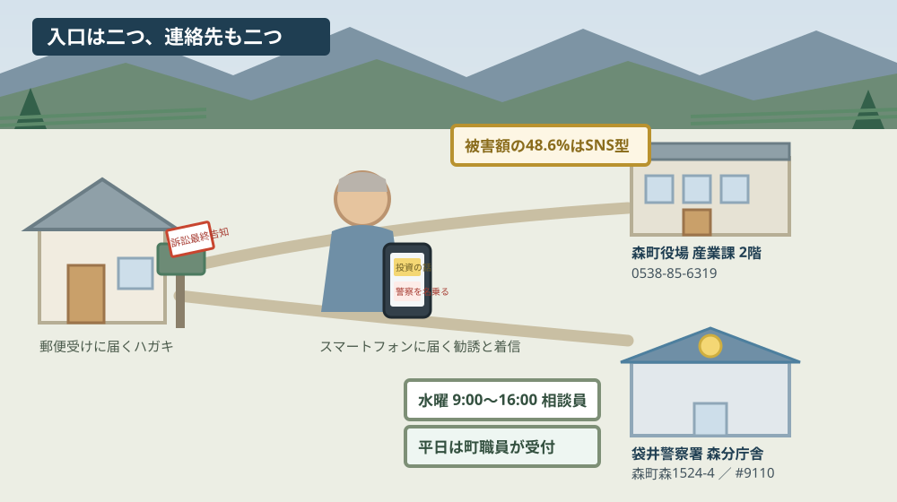
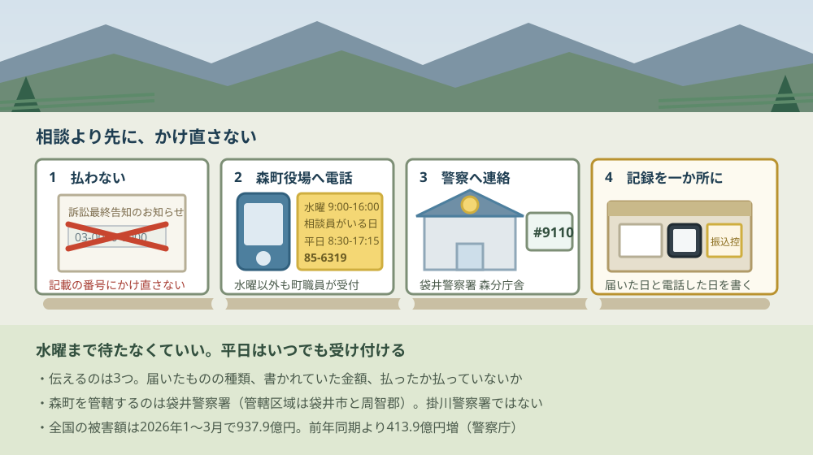

森町の消費生活相談窓口｜相談員は毎週水曜9〜16時

この記事の要点
Q. 親のところに変なハガキが来ました。森町ではどこに相談すればいいですか。
A. 森町役場の消費生活相談窓口です。専門資格を持つ相談員がいるのは毎週水曜9時〜16時ですが、それ以外の平日8時30分〜17時15分も町職員が受け付けます。場所は森町役場産業課本庁舎2階、電話は0538-85-6319。管轄は袋井警察署です。
静岡県周智郡森町（遠州森町）の家に、身に覚えのない請求のハガキが届く。スマートフォンに、警察を名乗る電話がかかってくる。そのとき、町のどこに電話をすればいいのか。この記事はその一点を確かめたものです。
私は磐田市で小さな不動産業を営みながら、森町の空き家・農地・実家じまいのご相談を受けています。今日は2026年8月31日、月曜日です。この日に森町の公表ページと警察庁・静岡県警察の公表資料で確認できたことを並べます。
先に言い切ります。水曜まで待たなくていい。森町の公表ページには、相談員がいるのは毎週水曜と書いてある一方で、その下に「上記以外でも、町職員が相談を受け付けています」とはっきり書かれています。
もう一つ、先に数字を置きます。警察庁が2026年5月1日に公表した令和8年3月末の暫定値では、特殊詐欺の被害額は3か月で937.9億円、前年の同じ時期より413.9億円増えました。この記事は、その全国の数字を森町の窓口の話に落とすところまで書きます。
公式情報から確定できること
森町の「森町消費生活相談員について」（更新日2019年3月1日）、「暮らしの相談窓口」（更新日2026年4月23日）、「振り込め詐欺被害防止の注意喚起について」（更新日2019年3月1日）、警察庁「令和8年3月末における特殊詐欺の認知・検挙状況等について（暫定値）」（2026年5月1日公表）、静岡県警察の公表資料を、2026年8月31日に確認しました。順に並べます。
一つ目。相談員による消費生活相談は、毎週水曜日の9時から16時までです。森町の公表ページには「毎週水曜日（祝日・年末年始を除く）9時から16時まで」と書かれています。祝日と年末年始は除かれます。
二つ目。水曜以外でも相談は受け付けられます。同じページに「(注意)上記以外でも、町職員が相談を受け付けています。（平日8時30分～17時15分）」と記載されています。相談員と町職員で対応が分かれる形です。
三つ目。相談方法は来庁と電話の両方です。「来庁、または電話にて受け付けています」と書かれています。高齢の親が役場まで出向かなくても、電話で始められます。
四つ目。対象は森町在住の方です。ページには「対象 森町在住の方」と明記されています。町外に住む子が親の代わりに相談したい場合の扱いは、公表ページには書かれていません。
五つ目。場所は森町役場産業課本庁舎2階です。森町役場の所在地は森町森2101-1、代表電話は0538-85-2111、開庁時間は月曜日から金曜日の8時30分から17時15分（土曜日・日曜日・祝日・年末年始を除く）と公表されています。
六つ目。電話番号は2つ載っています。「暮らしの相談窓口」の消費生活相談の欄は産業課商工観光係の0538-85-6319。一方「森町消費生活相談員について」のページ下部にある問い合わせ先は0538-85-6316で、部署名も別の課の観光担当係になっています。更新日が新しいのは前者です。
七つ目。相談員は専門資格を持つと明記されています。「森町では、消費者被害の未然防止や救済を目的として、専門資格を持つ相談員が町民の皆さんからの消費生活の相談に応じています」という書き出しです。
八つ目。森町を管轄する警察署は袋井警察署です。静岡県警察の公表資料に、袋井警察署の管轄区域は「袋井市、周智郡」と記載されています。掛川警察署ではありません。袋井警察署森分庁舎は森町森1524-4にあります。
九つ目。森町の注意喚起ページには、警察と役場の両方が連絡先として並んでいます。「心配になったら、袋井警察署、または、役場産業課の消費生活相談窓口までご連絡ください」と書かれています。どちらか一方に絞れという書き方ではありません。
十番目。そのページが扱っているのは、ハガキ型の架空請求です。「『消費料金に関する訴訟最終告知のお知らせ』という題名のハガキが届いたという情報が多数寄せられています」「ハガキに書いてある電話番号に電話を架けてはいけません」。放送期間は「平成30年2月27日（火曜日）夜～随時放送」と記載されています。
十一番目。全国の特殊詐欺は、2026年1月から3月の3か月で認知件数11,093件、被害額937.9億円です。前年同期比で件数が2,576件増（30.2パーセント増）、被害額が413.9億円増（79.0パーセント増）。警察庁の暫定値です。
十二番目。警察庁は「令和5年の年間被害額（907.7億円）を3月末時点で超える」と記しています。3年前の1年分を、3か月で超えたという書き方です。
十三番目。1日当たりの被害額は10.4億円と公表されています。「令和7年（8.9億円）と比べ1.5億円増加」とも書かれています。
十四番目。手口の中心が変わっています。被害額の最大はSNS型投資詐欺の456.1億円で、警察庁は「特殊詐欺全体の48.6％を占める」と記しています。次がニセ警察詐欺の222.4億円、SNS型ロマンス詐欺の135.9億円です。
| 手口（令和8年3月末・暫定値） | 認知件数 | 前年同期比 | 被害額 |
|---|---|---|---|
| SNS型投資詐欺 | 3,397件 | +2,232件 | 456.1億円 |
| ニセ警察詐欺 | 2,204件 | +310件 | 222.4億円 |
| 架空料金請求詐欺 | 1,556件 | +27件 | 43.4億円 |
| SNS型ロマンス詐欺 | 1,308件 | +176件 | 135.9億円 |
| オレオレ詐欺 | 788件 | -45件 | 30.4億円 |
| 還付金詐欺 | 639件 | -283件 | 13.6億円 |
| 特殊詐欺 合計 | 11,093件 | +2,576件 | 937.9億円 |
十五番目。オレオレ詐欺と還付金詐欺は、件数が減っています。オレオレ詐欺は45件減、還付金詐欺は283件減。減っているのに全体が増えているのは、SNSを入口にする手口が伸びているからです。
十六番目。静岡県内では、令和8年は8月27日現在で502件・43億6,220万円です。静岡県警察の公表資料（2026年8月28日更新）によるもので、前年比は68件増・10億4,471万円増。うちSNS型投資・ロマンス詐欺が167件・21億2,442万円です。
十七番目。静岡県内のニセ警察詐欺は126件・16億1,887万円です。件数は前年より9件減っているのに、被害額は3億8,957万円増えています。1件あたりが大きくなっている形です。
十八番目。令和7年の静岡県内は452件・30億2,140万円（暫定値）でした。令和2年が329件・6億3,062万円だったので、5年で被害額はおよそ4.8倍になっています（当方の計算）。
十九番目。緊急でない相談には、警察相談専用電話#9110があります。静岡県警察のふれあい相談室は054-254-9110です。事件かどうか分からない段階の相談先として案内されています。
全国の数字を、森町の側に置き直す
937.9億円という数字は、そのままでは動く材料になりません。ここから先は、公表値をもとにした当方の概算です。公表されている統計ではありません。
静岡県の令和8年は、8月27日までの239日で502件です。1日あたり2.1件になります。県内のどこかで、2日で4件、1週間で15件近くが起きている計算です。森町だけの件数は公表されていないので、ここから町の件数は出せません。
金額に直します。43億6,220万円を502件で割ると、1件あたり約869万円です。令和7年は30億2,140万円を452件で割って約668万円でした。1年で1件あたり約200万円増えたことになります。
この869万円という数字で、私は手が止まりました。私の商売でこの金額が動くのは、中古住宅一軒の売買です。契約書を作り、重要事項説明をし、決済に立ち会って動く金額と、電話一本で消える金額が同じ水準にある。それが今の平均値です。
もう一つの割り戻しをします。全国の被害額937.9億円のうち、ハガキ型を含む架空料金請求詐欺は43.4億円で、全体の4.6パーセントです（当方の計算）。SNS型投資詐欺の48.6パーセントとは、桁が一つ違います。
ハガキが無くなったわけではありません。件数は1,556件あり、前年より27件増えています。ただ、金額の中心はスマートフォンの中へ移りました。玄関の郵便受けを見ているだけでは、もう追いつきません。

この図で描きたかったのは、入口が二つあることです。郵便受けに入るハガキと、スマートフォンに届く投資の勧誘や警察を名乗る着信。前者は森町の公表ページに書かれていますが、後者は書かれていません。
もう一つは、道が二本あることです。森町の注意喚起ページは、役場と袋井警察署の両方を連絡先として並べています。どちらに電話すべきか迷わせない書き方で、これは良い点として後で数えます。
良い点：曜日で門前払いにならない書き方になっている
森町の公表ページを読んで、評価できる点が4つありました。順に書きます。
一つ目。「上記以外でも、町職員が相談を受け付けています。（平日8時30分～17時15分）」の一行があることです。相談員の日だけを書いて終わるページは珍しくありません。この一行があるだけで、火曜日に困った人が「水曜まで待とう」と考えずに済みます。詐欺は待ってくれません。
二つ目。相談方法に「電話」が明記されていることです。森町は面積が広く、地区によっては役場まで出るのに時間がかかります。高齢の親が一人で暮らしている家から、まず電話で始められると書いてあるのは実務的です。
三つ目。注意喚起ページに、袋井警察署と役場の2つの連絡先が並記されていることです。「詐欺かもしれない」と思った人が最初に迷うのは、警察に言うのか役場に言うのかです。両方書いてあれば、迷った時間がそのまま被害の時間になりません。
四つ目。相談員が「専門資格を持つ」と書かれていることです。資格の名称までは書かれていませんが、一般職員ではない人が対応する日があると分かる。これは相談する側の心理的な壁を下げます。
注文したい点：掲示が2018年のハガキで止まっている
ここからは、調べた側からの注文を4つ書きます。町を批判したいのではなく、公表資料を突き合わせた結果の報告です。
一つ目。消費生活の掲示が、2018年のハガキで止まっています。森町の注意喚起ページの更新日は2019年3月1日、扱っている手口は「消費料金に関する訴訟最終告知のお知らせ」というハガキ、放送期間は平成30年2月27日です。その間に全国の被害額の中心は、SNS型投資詐欺（456.1億円・全体の48.6パーセント）とニセ警察詐欺（222.4億円）へ移りました。
二つ目。電話番号が2つあり、部署名も一致していません。0538-85-6319と0538-85-6316。更新日2026年4月23日のページは前者、更新日2019年3月1日のページの問い合わせ先は後者で、課の名称も別です。初めて電話をかける人は、どちらが今の窓口か判断できません。
三つ目。消費者ホットライン188の案内が見当たりません。森町の消費生活関連のページと「暮らしの相談窓口」を確認した範囲では、188の記載を見つけられませんでした。役場が閉まっている土日祝や夜間に困った人が、次に何番へかければいいのかが分かりません。
四つ目。静岡県の消費生活センターへの案内もありません。国民生活センターの公表情報によると、静岡県西部県民生活センターは浜松市中央区中央1-12-1の静岡県浜松総合庁舎3階にあり、電話は053-452-2299、受付は月曜から金曜の9時から16時です。町の窓口が閉じている時間帯の受け皿として、この案内があると助かります。
ここは私も迷っているところです。相談員が週1日というのを「少ない」と断じてよいのか、私は決めかねています。専門資格を持つ相談員を常勤で置くのは、町の規模から見て軽い話ではありません。実際、週1日でも置いていること自体が、置いていない自治体との差です。ただ、週1日と分かって諦める人が出ることも事実だと思います。

この図の一番目を「払わない・かけ直さない」にしたのは、森町の公表ページの書き方に合わせたためです。「ハガキに書いてある電話番号に電話を架けてはいけません」と明記されています。相談より先に、この一つだけを守る。
四番目に記録を置いたのは、私の商売の癖です。不動産の相談でも、最初にお願いするのは資料を1か所に集めることです。封筒、着信履歴、振込の控え。散らばったままだと、窓口で説明する時間がそのまま長くなります。
対案・結論：今日、ご家族が確かめられること
ここからは、今日できることを順番に書きます。すでに払ってしまった場合も、これから困りそうな場合も、入口は同じです。
一つ目。ハガキや通知に書かれた電話番号には、かけないでください。森町の公表ページが明記している唯一の禁止事項がこれです。かけ直した時点で、電話番号が生きていることが相手に伝わります。
二つ目。森町役場へ電話します。0538-85-6319です。今日は月曜なので相談員の日ではありませんが、平日8時30分から17時15分は町職員が受け付けます。伝えるのは、届いたものの種類、書かれていた金額、まだ払っていないか払ってしまったかの3点で足ります。
三つ目。警察にも伝えます。管轄は袋井警察署です。森分庁舎は森町森1524-4。緊急でない相談なら警察相談専用電話#9110（静岡県警察ふれあい相談室 054-254-9110）でも受け付けています。役場と警察のどちらが先でも構いません。
四つ目。手元のものを1か所に集めます。ハガキや封筒の現物、スマートフォンの着信履歴、やり取りの画面、振込の控え。捨てないでください。窓口で最初に聞かれるのはここです。
五つ目。離れて暮らす親のことなら、今日は電話を1本かけるだけで十分です。「変な電話やハガキが来ていないか」と聞く。届いていると分かった時点で、次の一手が決まります。親の見守り全般は離れて暮らす親が心配なときの相談先に、契約してしまった後の相談は森町の消費生活相談のまとめに整理しています。
家族に残す記録
不動産の相談でも詐欺の相談でも、私が最初にお願いするのは同じです。記録を1枚にまとめること。
紙でもスマートフォンのメモでも構いません。置き場所を1か所に決めることのほうが、形式より効きます。
- 届いた日付と、届いたもの（ハガキ・封書・電話・SMS・SNSのメッセージのどれか）
- 相手が名乗った名称（会社名・機関名・担当者名）と、書かれていた電話番号
- 請求されていた金額と、支払期限として書かれていた日付
- 払ってしまった場合は、払った日・金額・方法（振込・電子マネー・暗号資産のどれか）と、振込先の口座情報
- 森町役場へ電話した日時と、対応した係。相談員の日（水曜）だったかどうか
- 袋井警察署または#9110へ連絡した日時と、受理番号を伝えられた場合はその番号
- 森町役場 消費生活相談 0538-85-6319（産業課商工観光係／本庁舎2階）
- 袋井警察署森分庁舎（森町森1524-4）／警察相談専用電話 #9110（054-254-9110）
大石の視点
ここからは私の意見です。公表されている事実とは分けてお読みください。この記事には、私が実際に立ち会った場面としての一人称の話は入れていません。森町で詐欺被害の相談を私が直接受けた記録がないためで、以下は資料を読んだ上での見方です。
私がこの窓口でいちばん良いと思うのは、「水曜以外でも受け付ける」と書いてあることです。役所の案内は、担当者がいる日だけを書いて終わりがちです。そう書かれた瞬間、読んだ人の頭の中では「その日以外は行っても無駄」に変わります。森町のページは、そこを一行で塞いでいます。
その上で注文したいのは、掲示の更新です。手口の中心が変わったのに、案内が2018年のハガキのままだと、スマートフォンで投資の勧誘を受けている人は「これは自分の話ではない」と読み飛ばします。制度が悪いのではなく、掲示の更新が追いついていない。ここは仕組みの話です。
不動産の目で言えば、これは重要事項説明とよく似ています。説明する側が「今いちばん起きていること」を先に言わないと、聞く側は自分の問題として受け取りません。私の商売でも、境界の話より先に相場の話をすると、後で境界の説明が耳に入らなくなります。順番の問題です。
だから私はこう案内します。森町に住むご家族には、今日のうちに0538-85-6319を家の電話のそばに書いて貼っておいてほしい。調べてからかける、では遅い場面があります。犯罪の被害に遭った後の相談の記録の作り方は森町の犯罪被害者等総合相談を整理した記事に、町の相談窓口全体の予約の要否は相談窓口を予約の要否で分けた記事にまとめました。親の財産に関わる不安が重なっているなら、高齢者虐待の相談窓口も同じ町内にあります。
まとめ
この記事で確認した事実を、最後に並べ直します。すべて2026年8月31日時点で公表されている内容です。
- 森町の相談員による消費生活相談は「毎週水曜日（祝日・年末年始を除く）9時から16時まで」（森町「森町消費生活相談員について」更新日2019年3月1日）
- 同ページに「上記以外でも、町職員が相談を受け付けています。（平日8時30分～17時15分）」と記載されている
- 相談方法は来庁または電話。対象は森町在住の方。場所は森町役場産業課本庁舎2階
- 「暮らしの相談窓口」（更新日2026年4月23日）の消費生活相談の欄は産業課商工観光係 0538-85-6319
- 「森町消費生活相談員について」のページ下部の問い合わせ先は0538-85-6316で、部署名も別の課の観光担当係になっている
- 森町の注意喚起ページ（更新日2019年3月1日）は「消費料金に関する訴訟最終告知のお知らせ」というハガキを扱い、「ハガキに書いてある電話番号に電話を架けてはいけません」「心配になったら、袋井警察署、または、役場産業課の消費生活相談窓口までご連絡ください」と記載。放送期間は平成30年2月27日夜から
- 森町を管轄するのは袋井警察署（管轄区域は袋井市、周智郡）。袋井警察署森分庁舎は森町森1524-4
- 全国の特殊詐欺は令和8年3月末の暫定値で認知件数11,093件（前年同期比+2,576件・+30.2パーセント）、被害額937.9億円（+413.9億円・+79.0パーセント）
- 警察庁は「令和5年の年間被害額（907.7億円）を3月末時点で超える」「1日当たりの被害額は10.4億円であり、令和7年（8.9億円）と比べ1.5億円増加」と記載
- 手口別の被害額はSNS型投資詐欺456.1億円（全体の48.6パーセント）、ニセ警察詐欺222.4億円、SNS型ロマンス詐欺135.9億円、架空料金請求詐欺43.4億円、オレオレ詐欺30.4億円、還付金詐欺13.6億円
- オレオレ詐欺は45件減、還付金詐欺は283件減。件数が減った手口がある一方で全体は増えている
- 静岡県内は令和8年8月27日現在で502件・43億6,220万円（前年比+68件・+10億4,471万円）。うちSNS型投資・ロマンス詐欺が167件・21億2,442万円、ニセ警察詐欺が126件・16億1,887万円
- 静岡県内の令和7年は452件・30億2,140万円（暫定値）、令和2年は329件・6億3,062万円
- 緊急でない相談は警察相談専用電話#9110（静岡県警察ふれあい相談室 054-254-9110）
- 静岡県西部県民生活センターは浜松市中央区中央1-12-1 静岡県浜松総合庁舎3階、053-452-2299、月曜から金曜の9時から16時（国民生活センターの公表情報）
- 静岡県内の被害額は令和2年から令和7年までの5年でおよそ4.8倍、静岡県の令和8年は1日あたり2.1件、1件あたり約869万円、令和7年は1件あたり約668万円、架空料金請求詐欺は全国の被害額の4.6パーセント（いずれも当方の計算）
- 森町単独の特殊詐欺の件数、消費者ホットライン188の町ページでの案内、町外に住む家族が代わりに相談できるかは、いずれも公表を確認できなかった
よくある質問
Q1. 森町の消費生活相談は、いつどこで受け付けていますか。
A1. 森町の公表ページによると、専門資格を持つ相談員による消費生活相談は毎週水曜日（祝日・年末年始を除く）9時から16時までです。場所は森町役場産業課本庁舎2階で、来庁または電話で受け付けています。対象は森町在住の方です。同じページに「上記以外でも、町職員が相談を受け付けています。（平日8時30分～17時15分）」と記載されており、水曜以外でも相談できます。
Q2. 森町の消費生活相談の電話番号はどれですか。番号が二つあるようですが。
A2. 森町の公表ページには二つの番号が載っています。「暮らしの相談窓口」（更新日2026年4月23日）の消費生活相談の欄は産業課商工観光係の0538-85-6319です。一方「森町消費生活相談員について」（更新日2019年3月1日）のページ下部にある問い合わせ先は0538-85-6316で、部署名も別の課になっています。更新日が新しいのは前者なので、まずは0538-85-6319が確実です。
Q3. 森町を管轄する警察署はどこですか。詐欺の相談は警察と役場のどちらにすればいいですか。
A3. 静岡県警察の公表資料によると、周智郡森町を管轄するのは袋井警察署です（管轄区域は袋井市と周智郡）。袋井警察署森分庁舎は森町森1524-4にあります。森町の注意喚起ページには「心配になったら、袋井警察署、または、役場産業課の消費生活相談窓口までご連絡ください」と書かれており、どちらでも構いません。緊急でない相談は警察相談専用電話#9110も使えます。
最後に一つだけ。ここに書いた相談日、時間、場所、電話番号、更新日、件数、被害額は、いずれも森町・警察庁・静岡県警察・国民生活センターの公表内容を2026年8月31日に確認して書き写したものです。1日あたり2.1件、1件あたり約869万円と約668万円、令和2年から令和7年までの5年でおよそ4.8倍、架空料金請求詐欺が全体の4.6パーセントという数字は、公表値をもとにした当方の概算であり、公表されている統計ではありません。森町単独の被害件数、消費者ホットライン188の町ページでの案内、町外に住む家族が代わりに相談できるかは確認できていません。警察庁は令和8年から手口の区分を変更しており、前年同期比は区分変更をまたぐ比較です。相談日や電話番号は変わることがあります。動く前に、必ず森町役場と袋井警察署の公表ページでご確認ください。
参考にした公式情報
- 森町消費生活相談員について／静岡県森町（「更新日：2019年03月01日」と表示されていること、「森町では、消費者被害の未然防止や救済を目的として、専門資格を持つ相談員が町民の皆さんからの消費生活の相談に応じています。」と記載されていること、日時が「毎週水曜日（祝日・年末年始を除く）9時から16時まで」であること、「(注意)上記以外でも、町職員が相談を受け付けています。（平日8時30分～17時15分）」と記載されていること、内容が「商品やサービスの契約トラブルなど消費生活に関する相談」、相談方法が「来庁、または電話にて受け付けています。」、対象が「森町在住の方」、場所が「森町役場産業課本庁舎2階」であること、ページ下部の問い合わせ先の電話番号が0538-85-6316で所在地が森町森2101-2と表示されていることを2026年8月31日に確認）
- 暮らしの相談窓口／静岡県森町（「更新日：2026年04月23日」と表示されていること、消費生活相談の欄に「産業課において、商品やサービスの契約トラブルなど、消費生活に関する相談に応じ、助言やあっせんを行っています。」と記載され、問い合わせ先が産業課商工観光係 電話0538-85-6319であること、同じページに人権相談・行政相談・無料法律相談・年金相談・健康相談と静岡県の緊急電話窓口が並んでいることを2026年8月31日に確認）
- 振り込め詐欺被害防止の注意喚起について／静岡県森町（「更新日：2019年03月01日」と表示されていること、「袋井警察署・産業課からお知らせします。」と書き出されていること、「『消費料金に関する訴訟最終告知のお知らせ』という題名のハガキが届いたという情報が多数寄せられています。」「ハガキに書いてある電話番号に電話を架けてはいけません。」「心配になったら、袋井警察署、または、役場産業課の消費生活相談窓口までご連絡ください。」と記載されていること、放送期間が「平成30年2月27日（火曜日）夜～随時放送」であることを2026年8月31日に確認）
- 令和8年3月末における特殊詐欺の認知・検挙状況等について（暫定値）／警察庁（2026年5月1日公表であること、認知件数が11,093件（前年同期比+2,576件・+30.2パーセント）、被害額が937.9億円（+413.9億円・+79.0パーセント）であること、「令和5年の年間被害額（907.7億円）を3月末時点で超える」「1日当たりの被害額は10.4億円であり、令和7年（8.9億円）と比べ1.5億円増加」「ＳＮＳ型投資詐欺の被害額が特殊詐欺全体の48.6％を占める」と記載されていること、手口別でSNS型投資詐欺3,397件・456.1億円、ニセ警察詐欺2,204件・222.4億円、架空料金請求詐欺1,556件・43.4億円、SNS型ロマンス詐欺1,308件・135.9億円、オレオレ詐欺788件・30.4億円、還付金詐欺639件・13.6億円であることを2026年8月31日に確認）
- 警察署の管轄区域／静岡県警察（袋井警察署の管轄区域が「袋井市、周智郡」と記載されており、周智郡森町が袋井警察署の管轄であることを2026年8月31日に確認）
- 犯罪発生状況／静岡県警察（2026年8月28日更新の資料に、令和8年中受理の特殊詐欺が8月27日現在で502件・43億6,220万円（前年比+68件・+10億4,471万円）、うちSNS型投資・ロマンス詐欺が167件・21億2,442万円、ニセ警察詐欺が126件・16億1,887万円、オレオレ詐欺が98件・2億9,288万円と記載されていることを2026年8月31日に確認）
- 特殊詐欺被害の発生状況／静岡県警察（更新日2026年3月31日の資料に、静岡県内の特殊詐欺が令和2年329件・6億3,062万円、令和7年（暫定値）452件・30億2,140万円と記載されていることを2026年8月31日に確認）
- 静岡県西部県民生活センター／国民生活センター（所在地が浜松市中央区中央1-12-1 静岡県浜松総合庁舎3階、電話が053-452-2299、受付が月曜から金曜の9時00分から16時00分（祝日・年末年始を除く）と掲載されていることを2026年8月31日に確認）

最終確認日：2026-08-31 ／ 本記事は公表情報と執筆者の見解を分けて記載しています。1日あたり2.1件、1件あたり約869万円と約668万円、令和2年から令和7年までの5年でおよそ4.8倍、架空料金請求詐欺が全国の被害額の4.6パーセントという数字は、いずれも公表値をもとにした執筆者の概算であり、公表されている統計ではありません。森町単独の特殊詐欺の件数、消費者ホットライン188の町ページでの案内、町外に住む家族が本人に代わって相談できるかは、2026年8月31日時点で確認できていません。警察庁は令和8年からニセ警察詐欺を独立した手口とし、SNS型投資詐欺・SNS型ロマンス詐欺を特殊詐欺の一手口としているため、前年同期比は区分変更をまたぐ比較です。相談日・電話番号・被害の状況は変わります。動く前に、必ず森町役場と静岡県警察の公表ページでご確認ください。